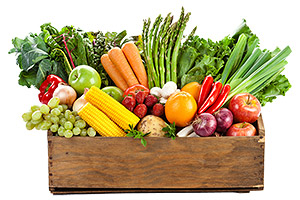

Welcome to the
Food for the Need
Our goal is to eliminate food waste and use it to feed the hungry people.
Join Us to Feed the Hungry
About Us
Learn more about us
Request Food
Request food for a food shelter.
Send Food
Send food to a food shelter.